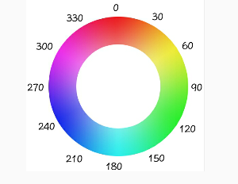

Linear
Ease
Ease-in
Ease-out
Ease-in-out
CSS3 gradients enable you to display smooth transition between two or more specified colors. CSS3 defines two types of gradients: Linear and Radial.
To create a linear gradient you must define at least two color stops. Color stops are the colors among which you want to render smooth transition. You can also set a starting point and a direction or angle.
HTML Code:
<div class="example"></div> <div class="example two"></div> <div class="example three"></div>
CSS Code:
<style> .example { width: 400px; height: 200px; margin: 20px auto 20px auto; background: linear-gradient( 0deg, red, green, blue ); } .two { background: linear-gradient( 45deg, red 0%, red 30%, green 40%, green 60%, blue 70%); } .three { background: linear-gradient( 90deg, red 0%, red 35%, green 35%, green 70%, blue 70%); } </style>
Outcome:
Another cool trick you can do is use repeating-linear-gradient, which repeats your motivo over and over again to fill the container.
HTML Code:
<div class="example four"></div>
CSS Code:
<style> .four { background: repeating-linear-gradient( red 0%, red 10%, green 10%, green 20%); } </style>
Outcome:
To create a radial gradient you must define at least two color stops. The radial gradient is defined by it's center, and it's syntax looks like this:
background: radial-gradient(position, shape or size, color-stops);
The first value defines the gradient position. We can use a descriptive keyword, such as top, bottom, center, or left, or we can specify, for example, 50% 50% to set the gradient at the center or 0% 0% to set the gradient at the top left, we can of course use px, em, etc as well.
The second value defines the shape and the gradient size. There are two arguments to shape gradients: the first is the ellipse, which is the default, and the second is the circle.
Lastly, the last value defines the color combination and color stops just like linear-gradient.
HTML Code:
<div class="example five"></div> <div class="example six"></div> <div class="example seven"></div> <div class="example eight"></div>
CSS Code:
<style> .five { background: radial-gradient(ellipse 200px 100px, red 0%, red 20%, pink 30%, pink 40%, green 60% ); } .six { background: radial-gradient(ellipse 200px 200px, red 0%, red 20%, pink 30%, pink 40%, green 60% ); } .seven { background: -webkit-radial-gradient(top left, circle, red 0%, red 20%, pink 30%, pink 40%, green 45% ); } .eight { background: -webkit-radial-gradient(50% 100%, circle, red 0%, red 20%, pink 30%, pink 40%, green 45% ); } </style>
Outcome:
I don't know why but position wasn't supported without the prefix of the browser I'm using, I guess it's still new and isn't very well supported, so if you even need to use radial gradients use multiple prefixes to make sure it works for all browsers, or the majority of browsers at least.
There really isn't much to say about it, you probably already know how it works, opacity can change the opacity of an element, 0 is transparent, 1 is visible, you can use numbers between such as 0.5, 0.8, etc to make glass effect.
The only reason I made a section for this property is because Internet Explorer, as usually, is a jerk, and needs special treatment to work the way we want it to.
In order for opacity property to work in all versions of IE, use the filter:alpha(opacity=x) along with the opacity property, x can take any values from 0 to 100, 0 is transparent, 100 is visible.
Transitions allow us to change from one property value to another over a given duration.
The transition-property specifies what properties should be transitioned, if you don't use this property then all properties that change will be transitioned, you can also use the all keyword to get the same result, but it is not recommended to do this, because this way the browser checks over all properties to find which ones change, and that can reduce the performance, it is recommended to list the properties that get changed by seperating these with commas, like this: width, height, etc.
The transition-duration specifies how much time it will take for the properties to be changed, this property can take seconds and miliseconds, but in my opinion it's better to use miliseconds, because JavaScript uses miliseconds too, and it's also easier to define small durations, since 1000ms is 1 second, you could just write 300ms for example to make the duration be 0.3 seconds.
The transition-delay specifies how much time it will take for the transition to begin, for example, if I wanted it to begin 1 second after I hover my mouse over the element I would write transition-delay: 1000ms.
Lastly, transition-timing-function specifies how the pace of the transition changes over it's duration, it works just like keysplines in SVG, it can use cubic-bazier value, just like SVG, which is defined in numerical values from 0 to 1, I recommend you to check out the explanation I gave in page five of my notes to understand better how it works, you may also want to check how bazier curves are made. The syntax of transition-timing-function when used with cubic-bazier values looks like this: transition-timing-function: cubic-bazier(0,0,1,1), you can also use keywords such as ease, ease-in, ease-out, ease-in-out and linear but I will talk more about this later.
So, lets start with some examples, here is a div with a simple hover animation, I used transform property, I will speak more about this property in later sections, but you don't really need to know much about it for now.
HTML code:
<div class="transition-example"></div>
CSS code:
<style>
.transition-example {
width: 200px;
height: 100px;
background-color: red;
margin: 20px auto 20px auto;
}
.transition-example:hover {
background-color: blue;
transform: rotate(45deg);
}
</style>
Outcome:
If you want to make a smooth transition, and not just have a div that changes like this, you need to use at least the transition-property and transition-duration properties, you can also include the transition-delay and transition-timing-function properties for extra effects.
HTML code:
<div class="transition-example2"></div>
CSS code:
<style>
.transition-example2 {
width: 200px;
height: 100px;
background-color: red;
margin: 20px auto 20px auto;
transition-property: background-color, transform;
transition-duration: 1000ms, 2000ms;
transition-delay: 0ms, 1000ms;
}
.transition-example2:hover {
background-color: blue;
transform: rotate(180deg);
}
</style>
Outcome:
So, the transition-duration, transition-delay and transition-property properties are pretty simple, there isn't much to explain really, so let's get to transition-timing-function already, I will first show you how each keyword behaves.
HTML code:
<div id="main-div">
<div class="example-transition linear">Linear </div>
<div class="example-transition ease"> Ease</div>
<div class="example-transition ease-in">Ease-in</div>
<div class="example-transition ease-out">Ease-out</div>
<div class="example-transition ease-in-out">Ease-in-out<
</div>
CSS code:
<style>
.example-transition {
width: 100px;
height: 50px;
background-color: green;
margin: 20px auto 20px auto;
color: white;
text-align: center;
line-height: 50px;
text-shadow: 1px 1px 0px black,
-1px -1ox 0px black;
transition-property: width;
transition-duration: 2000ms;
}
.linear {
transition-timing-function: linear;
}
.ease {
transition-timing-function: ease;
}
.ease-in {
transition-timing-function: ease-in;
}
.ease-out {
transition-timing-function: ease-out;
}
.ease-in-out{
transition-timing-function: ease-in-out;
}
#main-div:hover div{
width: 500px;
}
#main-div {
width: 500px;
margin: auto;
background-color: white;
border: 3px solid black;
border-radius: 20px;
}
</style>
Outcome:
Linear keeps a straight speed throughout the animation, ease starts fast and slows down at the end, ease-in starts slow and speeds up at the end, ease-out is like ease but I believe it starts slower, ease-in-out is something between ease-in and ease-out.
Now, about the cubic-bazier values, you can go read how it works in page five of my notes, I talk about it in animation attributes, in keysplines, however, I'm now gonna tell you a little tool you can use to make your life way easier.
First, right click on the element you are animating and press inspect, a menu will open with a lot of stuff in it, go to filters and find transition-timing-function, press it, then click on whatever is inside, in my case it has some of the keywords I used before, I pressed on it, and at the left of my screen it took me to the part of the code where I used this keyword, and it also has a little icon next to the keyword, if you press it a tool will open, which lets you create your own bazier-curves, which you then can copy and use in your code. This may be different depending on your browser, I use google chrome, and it's pretty cool and easy tool to use for my transitions.
Lastly, you can use transition property to merge all four transition properties together, first number you write is for duration, second number is for delay.
Transforms allow you to translate, rotate, scale and skew elements, just like in SVG.
A transformation is an effect that lets an element change shape, size and position, note that the transformations do not effect the elements around it, just like if it's position was set to relative.
The rotate transformation is used to rotate elements, it takes degrees, and it works just like in SVG, there really isn't much to say about it, here is an example:
HTML code:
<div class="examplee-div"> <div></div> </div>
CSS code:
<Style> .examplee-div div { width: 150px; height: 50px; background-color: orange; margin: 60px auto 60px auto; border: 3px solid black; border-radius: 20px; transform: rotate(45deg) } </Style>
Outcome:
You can of course also use negative numbers to rotate it the other way around, let's move to the next transformation.
The transform-origin property allows you to change the coordinates from which the element is turned.
Think of it like this: by default elements are rotated from the center, 50% along the x axis and 50% down the y axis, get a paper and place your finger at it's center, then try to rotate clockwise with your finger placed down, that's how an element with transform-origin: 50% 50%; will rotate, now place your finger at the top right corner of the paper and do the same, that's how an element with transform-origin: 100% 0%; will rotate, I hope you understand.
HTML code:
<div class="div699 empty-div-container"> <div class="div699 aone"></div> </div> <div class="div699 empty-div-container"> <div class="div699 atwo"></div> </div>
CSS code:
<Style> .div699 { width: 150px; height: 50px; background-color: orange; border: 3px solid black; border-radius: 20px; } .empty-div-container { margin: 60px auto 60px auto; background-color: unset; } .aone { transform: rotate(45deg); } .atwo{ transform-origin: 100% 0%; transform: rotate(-45deg); } </Style>
Outcome:
The translate() method moves an element
from it's
HTML code:
<div class="div-container"> <div></div> </div>
CSS code:
<Style> .div-container { width: 250px; background-color: unset; height: 100px; border: 3px solid black; border-radius: 20px; margin: 20px auto 70px auto; padding: 0px; } .div-container div { width: 250px; background-color: orangered; height: 100px; border: 3px solid black; border-radius: 20px; margin: 0px; transform: translate(50px, 50px); } </Style>
Outcome:
The skew() method skews an element along the x-axis and the y-axis by the given angle, I have talked more about it in page five of my notes since skew is also used in SVG, you can check this out if you want.
HTML code:
<div class="div-container2 bone"> <div></div> </div> <div class="div-container2 btwo"> <div></div> </div>
CSS code:
<Style> .div-container2 { width: 250px; background-color: unset; height: 100px; border: 3px solid black; border-radius: 20px; margin: 20px auto 70px auto; padding: 0px; } .div-container2 div { width: 250px; background-color: orangered; height: 100px; border: 3px solid black; border-radius: 20px; margin: 0px; } .bone div{ transform: skewX(25deg); } .btwo div{ transform: skewY(25deg); } </Style>
Outcome:
I recommend you to play around with it in order to fully understand how it works.
The scale method increases or decreases the size of an element according to the parameters given for the width and height, 1 stands for original size, 2 stands for twice original size, and so on.
HTML code:
<div class="div-container3"> <div></div> </div>
CSS code:
<Style> .div-container3{ width: 250px; height: 100px; background-color: unset; border: 3px solid black; border-radius: 20px; margin: 20px auto 20px auto; } .div-container3 div{ width: 250px; height: 97px; background-color: orangered; border: 3px solid black; border-radius: 20px; transform: scale(0.5, 1); } </Style>
Outcome:
To add multiple transformations to an element simply seperate them with spaces, don't use commas, or it won't work.
Along with x and y axes, 3D Transforms introduce the Z-axis, which enables 3D manipulations.
3D Transforms are quite similar to 2D Transforms: rotateX(), rotateY() and rotateZ() rotate an element in 3D space around the corresponding axis at a given degree.
HTML code:
<div class="container-div"> I rotate around the X axis </div> <div class="container-div2"> I rotate around the Y axis </div> <div class="container-div3"> I rotate around the Z axis </div>
CSS code:
<style> .container-div, .container-div2, .container-div3{ width:250px; height: 100px; background-color: green; border: 3px solid black; border-radius: 20px; margin: 20px auto 20px auto; text-align: center; line-height: 100px; color: white; font-size: 20px; font-family: Arial, Helvetica, sans-serif; text-shadow: 1px 1px 0px black, -1px -1px 0px black; cursor: default; transition-property: transform; transition-duration: 3000ms; transition-timing-function: ease; } .container-div:hover { transform: rotateX(180deg); } .container-div2:hover { transform: rotateY(180deg); } .container-div3:hover { transform: rotateZ(180deg); } </style>
Outcome:
You can also use rotate3d() method which allows you to define rotateX, rotateY and rotateZ all together.
3D translate method allows you to move the element horizontally (translateX), vertically (translateY) and into or out of the screen (translateZ), positive numbers move it towards the viewer, negative numbers move it away.
You can also use translate3d() method which allows you to define translateX(), translateY() and translateZ() all at once.
HTML code:
<div class="container-div4"> Hello, I'm a div </div>
CSS code:
<style> .container-div4{ width:250px; height: 100px; background-color: green; border: 3px solid black; border-radius: 20px; margin: 20px auto 20px auto; text-align: center; line-height: 100px; color: white; font-size: 20px; font-family: Arial, Helvetica, sans-serif; text-shadow: 1px 1px 0px black, -1px -1px 0px black; cursor: default; transition-property: transform; transition-duration: 3000ms; transition-timing-function: ease; } .container-div4:hover { transform: translate3d(20px, 20px, -100px); } </style>
Outcome:
The perspective property defines how the depth of the 3D is rendered. Think of perspective as a distance from the viewer to the object. The greater the value, the further the distance, so the less intense the visual effect.
When defining the perspective property for an element, it is the child elements that get the perspective view, not the element itself, so you need to add perspective property to the parent, or else you won't see any difference.
HTML code:
<div class="container-div5 container-decor"> <div>Perspective: 100px;</div> </div> <div class="container-div6 container-decor"> <div>Perspective: 200px;</div> </div> <div class="container-div7 container-decor"> <div>Perspective: 100px;</div> </div>
CSS code:
<style> .container-decor{ width:250px; height: 100px; background-color: unset; border: 1px solid black; border-radius: 20px; margin: 20px auto 20px auto; } .container-div5{ perspective: 100px; } .container-div6{ perspective: 200px; } .container-div7{ perspective: 100px; } .container-decor div{ width:250px; height: 100px; background-color: green; border: 3px solid black; border-radius: 20px; text-align: center; line-height: 100px; color: white; font-size: 20px; font-family: Arial, Helvetica, sans-serif; text-shadow: 1px 1px 0px black, -1px -1px 0px black; cursor: default; transition-property: transform; transition-duration: 3000ms; transition-timing-function: ease; } .container-div5:hover div, .container-div6:hover div { transform: rotateX(180deg); } .container-div7:hover div { transform: translate3d(50px, 50px, 50px); } </style>
Outcome:
An animation lets an element change from one style to another, you can change as many CSS properties as you want to, as many times as you want to.
When you specify CSS styles inside the @keyframe rule, the animation will gradually change from the current style to a new style at cartain times. To get an animation to work you must bind the animation to an element.
There are a few animation properties out there, but you are probably already familiar with most of them if you studied transitions in the section before transformations.
The following example will change the background-color of a div three times, when the animation is 50% complete, 70% complete and 100% complete, then it will repeat it self over and over forever, each loop will take 5 seconds, and the delay for the first loop will be 2 seconds (it only takes 2 seconds to begin, it doesn't take 2 seconds for it to replay), the animation-timing-function will be set to ease just to make the animation feel more alive, and the animation-direction will be alternate.
HTML code:
<div class="animation-example"></div>
CSS code:
<style> .animation-example { width: 300px; height: 150px; background-color: gray; margin: 20px auto 20px auto; border: 3px solid black; border-radius: 20px; animation-name: example; animation-duration: 5000ms; animation-delay: 2000ms; animation-direction: alternate; animation-timing-function: ease; animation-iteration-count: infinite; } @keyframes example { 0% {background-color: gray;} 50% {background-color: red;} 70% {background-color: blue;} 100% {background-color: purple;} } </style>
Outcome:
That's pretty much everything I had to say, you can of course use animations for other properties too, and even multiple properties if you want, and you can do great things with this, there are also probably tricks and things I may have missed, because I rushed this section a little, if I find anything else about animations in the future that's worth mentioning I will come back to talk about it here.
The filter property lets you apply graphical effects like blurring or color shifting to an element.
Filters are commonly used to adjust the rendering of images, backgrounds and borders.
Image filtering is useful when you want to have different styling for the same image. Instead of uploading multiple images to the website, you can upload only one image and then define visual effects using the filter property.
Filter functions include blur(), brightness, contrast(), drop-shadow, grayscale(), hue-rotate(), invert(), opacity(), saturate() and sepia().
drop-shadow(w h b c) creates a shadow effect that extends beyond an image for the width w and height h with blur b and color c.
HTML code:
<img class="shadow-filter" src="../images/filter-example.jpg">
CSS code:
<style> .shadow-filter { display: block; width: 200px; height: 200px; margin: 20px auto 20px; filter: drop-shadow(5px 9px 2px blue) drop-shadow(0px -9px 2px green) drop-shadow(-10px 0px 2px pink); } </style>
Outcome:
The grayscale function converts an image to grayscale. The only parameter defines the portion of the conversion.
0% grayscale is the original image, whereas 100% makes the image completely grayscale.
HTML code:
<div class="images"> <img class="grayscale-filter" src="../images/filter-example.jpg"> <img class="grayscale-filter twoo" src="../images/filter-example.jpg"> <img class="grayscale-filter three" src="../images/filter-example.jpg"> </div>
CSS code:
<style> .images{ display: flex; justify-content: space-around; width: 70%; margin: auto; } .grayscale-filter { display: block; width: 200px; height: 200px; filter: grayscale(0%); } .twoo { filter: grayscale(70%); } .three { filter: grayscale(100%); } </style>
Outcome:
The sepia function converts an image to sepia.
This is similar to using grayscale but with a reddish-brown color tone.
The idea behind sepia filters is that they can make black and white photos look a bit more eye-catching than the basic grayscale version.
0% sepia is the original image, whereas 100% converts the image to completely sepia.
HTML code:
<div class="images2"> <img class="sepia-filter" src="../images/filter-example.jpg"> <img class="sepia-filter twooo" src="../images/filter-example.jpg"> <img class="sepia-filter threee" src="../images/filter-example.jpg"> </div>
CSS code:
<style> .images2{ display: flex; justify-content: space-around; width: 70%; margin: auto; } .sepia-filter { display: block; width: 200px; height: 200px; filter: sepia(0%); } .twooo { filter: sepia(50%); } .threee { filter: sepia(100%); } </style>
Outcome:
The aturate function controls the color saturation for an image. The only parameter determines the portion of the saturation that is applied to the image. The parameter can be either a percentage value or a number.
0% creates a completely unsaturated image (grayscale), whereas 100% is the original image. The sature function also accepts values over 100%.
HTML code:
<div class="images3"> <img class="saturate-filter" src="../images/filter-example.jpg"> <img class="saturate-filter twooo2" src="../images/filter-example.jpg"> <img class="saturate-filter threee2" src="../images/filter-example.jpg"> </div>
CSS code:
<style> .images3{ display: flex; justify-content: space-around; width: 70%; margin: auto; } .saturate-filter { display: block; width: 200px; height: 200px; filter: saturate(0%); } .twooo2 { filter: saturate(100%); } .threee2 { filter: saturate(900%); } </style>
Outcome:
The hue-rotate function applies a hue rotation (based on the color circle) to an image.
The function takes an angle of rotation as it's parameter. The value angle defines the number of degrees around the color circle the input samples will be adjusted.
When you use hue-rotate() to rotate the hue, you are rotating around this color circle.
If the image contains cyan color, which is at 180 deg, rotating the hue by 180 deg will make the cyan color red.
HTML code:
<img class="image4" src="../images/filter-example.jpg">
CSS code:
<style> .image4 { width: 200px; height: 200px; display: block; margin: 20px auto 20px auto; filter:hue-rotate(180deg); } </style>
Outcome:
The invert function inverts the colors of an image to make dark areas bright and bright areas dark. The function takes the proportion of the conversion as it's parameter.
The parameter can be either a percentage value or a number. 0% invert leaves the image unchanged, whereas 100% creates a completely inverted image that is similar to a photographic negative.
HTML code:
<div class="images5"> <img class="invert-filter" src="../images/filter-example.jpg"> <img class="invert-filter twooo3" src="../images/filter-example.jpg"> <img class="invert-filter threee3" src="../images/filter-example.jpg"> </div>
CSS code:
<style> .images5{ display: flex; justify-content: space-around; width: 70%; margin: auto; } .invert-filter { display: block; width: 200px; height: 200px; filter: invert(0%); } .twooo3 { filter: invert(60%); } .threee3 { filter: invert(100%); } </style>
Outcome:
The opacity function sets the opacity of an image to change it's transparency
0% opacity creates a completely transparent image, whereas 100% is the original image.
HTML code:
<div class="images6"> <img class="opacity-filter" src="../images/filter-example.jpg"> <img class="opacity-filter twooo4" src="../images/filter-example.jpg"> <img class="opacity-filter threee4" src="../images/filter-example.jpg"> </div>
CSS code:
<style> .images6{ display: flex; justify-content: space-around; width: 70%; margin: auto; } .opacity-filter { display: block; width: 200px; height: 200px; filter: opacity(10%); } .twooo4 { filter: opacity(60%); } .threee4 { filter: opacity(100%); } </style>
Outcome:
The brightness(ammount) function adjusts the brightness of an image, making it appear brighter or darker. The ammount parameter determines the brightness level of the image. The parameter can take either a percentage value or a number.
A value of 0% results in an image that is completely dark, a value of 100% results in an image that is unchanged, anything over 100% results in an image that is brighter.
A number value of 0.5 has the same effect as the percentage value of 50%, a value of 1 is same as 100%.
HTML code:
<div class="images7"> <img class="brightness-filter" src="../images/filter-example.jpg"> <img class="brightness-filter twooo5" src="../images/filter-example.jpg"> <img class="brightness-filter threee5" src="../images/filter-example.jpg"> </div>
CSS code:
<style> .images7{ display: flex; justify-content: space-around; width: 70%; margin: auto; } .brightness-filter { display: block; width: 200px; height: 200px; filter: brightness(10%); } .twooo5 { filter: brightness(100%); } .threee5 { filter: brightness(150%); } </style>
Outcome:
The contrast function adjusts the contrast of the image. The ammount parameter can take either percentage value or a number.
A value under 100% will decrease the contrast, while a value over 100% will increase the contrast.
A value of 0% will create an image that is completely grey, while a value of 100% will leave the image unchanged.
A value of 0.5 corresponds to 50%, a value of 1 corresponds to 100%.
HTML code:
<div class="images8"> <img class="contrast-filter" src="../images/filter-example.jpg"> <img class="contrast-filter twooo6" src="../images/filter-example.jpg"> <img class="contrast-filter threee6" src="../images/filter-example.jpg"> </div>
CSS code:
<style> .images8{ display: flex; justify-content: space-around; width: 70%; margin: auto; } .contrast-filter { display: block; width: 200px; height: 200px; filter: contrast(10%); } .twooo6 { filter: contrast(100%); } .threee6 { filter: contrast(170%); } </style>
Outcome:
The blur function applies a blur effect to an image. The blur function has only one parameter, the radius, which defines how many pixels on the screen blend into each other. (a larger value creates more blur)
HTML code:
<div class="images9"> <img class="blur-filter" src="../images/filter-example.jpg"> <img class="blur-filter twooo7" src="../images/filter-example.jpg"> <img class="blur-filter threee7" src="../images/filter-example.jpg"> </div>
CSS code:
<style> .images9{ display: flex; justify-content: space-around; width: 70%; margin: auto; } .blur-filter { display: block; width: 200px; height: 200px; filter: blur(0px); } .twooo7 { filter: blur(3px); } .threee7 { filter: blur(7px); } </style>
Outcome:
The @media rule allows us to define styling rules that apply depending on the device type, screen size, etc.
There are three device types I believe, without being 100% sure, screen device, print device and speech device.
Usually we just use the all keyword to target all devices, then to specify the size of the screen you can add the and keyword, which allows you to add requirements a device needs to have for the styling rules to be applied, or you can also use comma which however does not work like and, the keyword and adds requirements, the comma means or, so, I could for example say if the screen has less than 500px width and more than 200px width text should be red, by simply writing @media all and (max-width: 500px) and (min-width: 300px) { p { color: red; } }, if I had seperated these two requirements with comma that would mean whenever the width is less than 500px or whenever the width is more than 300px the text should be red, so basically, the text would be red at all times.
HTML code:
<div class="div-one"> <Span class="span-one"></Span> <Span class="span-one"></Span> <Span class="span-one"></Span> <Span class="span-one"></Span> </div>
CSS code:
<style> .div-one { min-height: 0px; width: 1000px; margin: auto; } .span-one { display: inline-block; width: 100px; height: 200px; background-color: white; border: 3px solid black; border-radius: 20px; margin: 20px 70px 20px 70px; transition-property: margin, background-color; transition-duration: 1000ms; transition-timing-function: ease; } @media all and (max-width: 900px) { .span-one { background-color: red; margin: 20px 50px 20px 50px } } @media all and (max-width: 750px) { .span-one { background-color: red; margin: 20px 30px 20px 30px } } @media all and (max-width: 600px) { .span-one { background-color: red; margin: 20px 10px 20px 10px } } </style>
Outcome:
In the example above, if you try to change the browser size you will see the transition effect, if you are on mobile, maybe rotating your phone will work too, it really depends on the screen size, and now that I spoke about rotation, thats a great opportunity to talk about the orientation rule, which allows us to define what styling rules to be applied on landscape (when the width of the screen is bigger than the height) and portrait (when the height is bigger than the width).
HTML code:
<div class="div-two"> <Span class="span-one"></Span> <Span class="span-one"></Span> <Span class="span-one"></Span> <Span class="span-one"></Span> </div>
CSS code:
<style> .div-two { min-height: 0px; width: 1000px; margin: auto; } .span-one { display: inline-block; width: 100px; height: 200px; background-color: white; border: 3px solid black; border-radius: 20px; margin: 20px 70px 20px 70px; transition-property: margin, background-color; transition-duration: 1000ms; transition-timing-function: ease; } @media all and (orientation: landscape) { .div-two .span-one { background-color: white; } } @media all and (orientation: portrait) { .div-two .span-one { background-color: green; margin: 20px 30px 20px 30px } } </style>
Outcome:
Remember, the @media rule should always come after the original, or the original will overrun it, just like it would to any other CSS property.